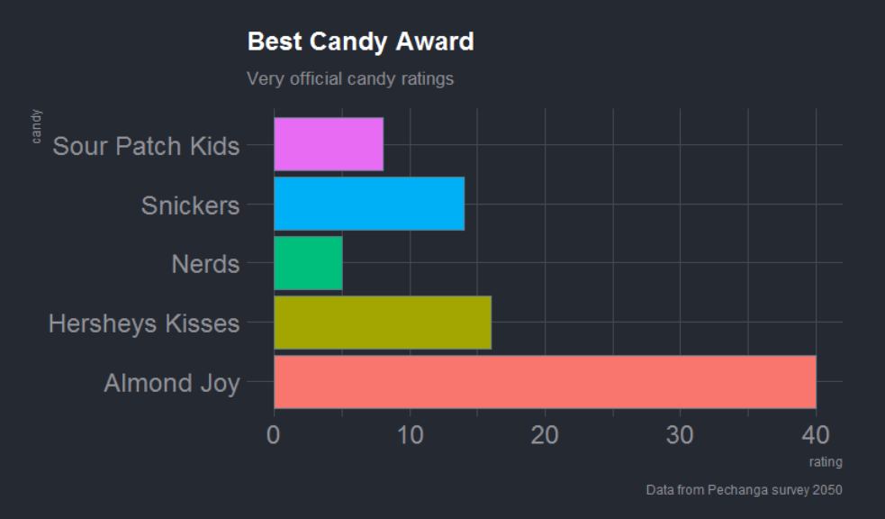
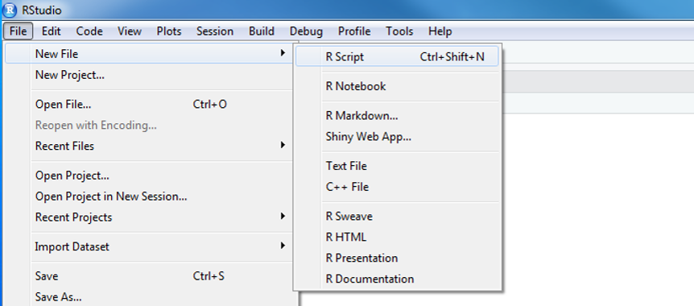
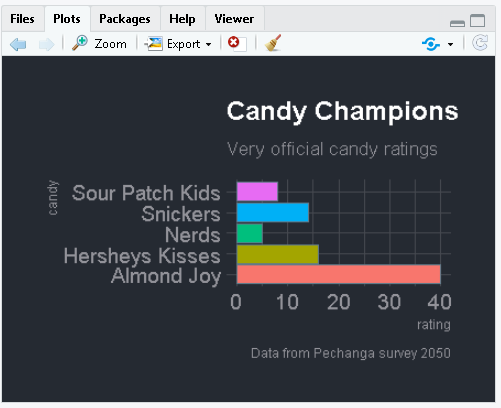
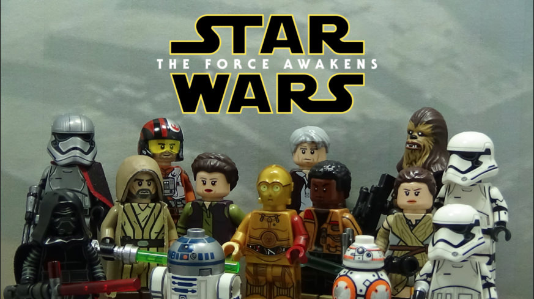

Good morning!


We like R.
We aren’t computer scientists – and that’s okay!
We make lots of mistakes. Mistakes are how we learn. They are also funny. Laugh with us!
1 What’s R?

Let’s launch ourselves into the unknown and make a candy plot. With a little copy-pasting we can make an informative chart of everyone’s favorite candy.
Since you have the best taste, let’s make your candy BIG .
Instructions
- Copy all the code below. Hold SHIFT and highlight all of the lines, until you reach
theme_ft_rc(base_size = 14).
#----------- Install packages ---------------#
install.packages("ggplot2")
install.packages("readr")
install.packages("hrbrthemes")
#------------- Load packages ----------------#
library(ggplot2)
library(readr)
library(hrbrthemes)
#---------------- Candy data ------------------#
survey <- read_csv('candy,rating
"Snickers", 14
"Almond Joy", 40
"Hersheys Kisses", 16
"Nerds", 5
"Sour Patch Kids", 8')- Open R Studio
- Select File > New File > R Script. You will see a code editor window open.
- Or click the paper icon with the green plus at the top left.

- Paste the copied code into the upper left hand window. This is your code editor.
- Highlight all of the code and hit CTRL+ENTER.
This chart will appear in the lower right of RStudio.

- Change the name of a candy to something even better.
- Re-run the code again.
- Try increasing the number next to the new candy.
Explore!
- Add another candy and rating to the data.
- Add your name to the subtitle.
- Delete the hashtag in front of the
scale_viridis...line.
- What happens when you re-run the code?
- Change the
show.legend =value toTRUE
- What happens?
Yoda says

- It’s okay! You don’t need to memorize everything.
- Absorb what’s possible. You can look up the details later.
- You are free to break things. Create errors. Make the computer angry. Learn through mistakes. R will forgive you.
- Cheat if you’re stuck.
- There’s no test. Share with your neighbors. Copy others.
Greetings

Let’s introduce ourselves and the data we love. Chat with your partner and get to know some things about them.
Chit-chat ideas
- Your name or Star Wars alias
- Types of data you have
- Who you share it with
- Something you want to get from the workshop
- The funniest part of your data
- The most repetitive part? Hint: Maybe this is something you can automate with R
Go Team
We’re going to need to work together to help Rey get off the dusty planet Jakku. Use each other as a resource. Share ideas, share code, collaborate. Puns and bad jokes are encouraged.
Here’s one:
Which Jedi is best at opening PDF files? >
A: Adobe Wan Kenobi

2 RStudio Tour

1. Code Editor
This is where you write your scripts and document your work. Move your cursor to a line of code and then click [Ctrl] + [Enter] to run the code. The tabs at the top of the code editor show the scripts and data sets you have open. The script is your home and where we spend most of our time.
3. Workspace
This pane shows all of the objects and functions that you have created, as well as a history of the code you have run during your current session. The environment tab shows all of your objects and functions. The history tab shows the code you have run. Note the broom icon below the Connections tab. This cleans shop and allows you to clear all of the objects in your workspace.
2. R Console
This is where code is actually executed by the computer. It shows code that you have run and the messages returned by that code. You can input code directly into the console and run it, but it won’t be saved for later. That’s why we usually run our code directly from a script in the code editor.
You may see some scary warnings and errors appear here after running code. Warnings are helpful messages that let you know the results may not be exactly what you expected. Errors on the other hand, mean the code was unable to run. Usually this means there was a typo, or we forgot to run an important step higher up in our script.
4. Plots and files
These tabs allow you to view and open files in your current directory, view plots and other visual objects like maps, view your installed packages, and access the help window.
The Files tab is especially handy for finding a file you want and clicking it to open it. You can also click the More option and select “Show Folder in a New Window” as a shortcut to open your project folder.
Customize R Studio
Let’s add a little style.
Here’s how to change the font and color theme
- Go to Tools on the top navigation bar.
- Choose
Global Options... - Choose
Appearancewith the paint bucket. - Increase the
Editor Font size - Pick an Editor theme you like.
- The default is
Textmateif you want to go back
- The default is

Why R?

R Community
- Help requests and questions on Teams
- R Cheatsheets
- Finding R Help - See Get Help!
When we use R
- To connect to databases
- To read data from websites
- To document and share methods
- When data will have frequent updates
- When we want to improve a process over time
R is for reading

Lucky for us, R code doesn’t have to be only math equations. R let’s us do data analysis in a step-by-step fashion, much like creating a recipe for cookies. And just like a recipe, we can start at the top and read our way down to the bottom.
Example ozone analysis
Here’s an example air monitoring project from start to finish.
EXAMPLE: Ozone data project >
Imagine we just received 3 years worth of ozone monitoring data to summarize. Fun!
Below is an example workflow we might follow in R.
- Read the data
- Simplify columns
- Plot the data
- Clean the data
- View the data closer
- Summarize the data
- Save the results
- Share with friends
0. Start a new project
We’ll name this project: "2019_Ozone"
1. Read the data
library(readr)
# Read a file from the web
air_data <- read_csv("https://itep-r.netlify.com/data/OZONE_samples_demo.csv")| SITE | Date | OZONE | TEMP_F |
|---|---|---|---|
| 27-137-7554 | 2018-06-10 | 11 | 71.6 |
| 27-137-7001 | 2017-07-04 | 14 | 75.2 |
| 27-137-7001 | 2016-04-27 | 9 | 33.8 |
| 27-137-7001 | 2016-06-06 | 13 | 78.8 |
| 27-137-7554 | 2017-04-29 | 3 | 38.6 |
2. Simplify column names
library(janitor)
# Capital letters and spaces make things more difficult
# Let's clean them out
air_data <- clean_names(air_data)3. Plot the data
library(ggplot2)
ggplot(air_data, aes(x = temp_f, y = ozone)) +
geom_point(alpha = 0.2) +
geom_smooth(method = "lm")
4. Clean the data
library(dplyr)
# Drop values out of range
air_data <- air_data %>% filter(ozone > 0, temp_f < 199)
# Convert all samples to PPB
air_data <- air_data %>%
mutate(OZONE = ifelse(units == "PPM", ozone * 1000,
ozone)) 5. View the data closer
ggplot(air_data, aes(x = temp_f, y = ozone)) +
geom_point(alpha = 0.2, size = 3) +
geom_smooth(method = "lm") +
facet_wrap(~site) +
labs(title = "Ozone increases with temperature",
subtitle = "Observations from 2015-2017")
6. Summarize the data
air_data <- air_data %>%
group_by(site, year) %>%
summarize(avg_ozone = mean(ozone) %>% round(2),
avg_temp = mean(temp_f) %>% round(2))| site | year | avg_ozone | avg_temp |
|---|---|---|---|
| 27-137-7001 | 2016 | 11.01 | 60.74 |
| 27-137-7001 | 2017 | 11.26 | 60.66 |
| 27-137-7001 | 2018 | 11.54 | 60.59 |
| 27-137-7554 | 2016 | 12.23 | 61.23 |
| 27-137-7554 | 2017 | 11.81 | 60.98 |
| 27-137-7554 | 2018 | 12.87 | 61.02 |
7. Save the results
Save the final data table
air_data %>% write_csv("results/2015-17_ozone_summary.csv")Save the site plot to PDF
ggsave("results/2015-2017 - Ozone vs Temp.pdf")